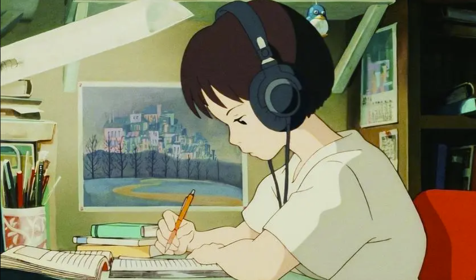

About me? About you!
真要开始写写自己，发现却无从写起，我了解自己吗？我想是不了解的，我想我的焦虑也来源于此。我经常处于自我堵塞的状态下，矛盾，无休止的矛盾。我想我需要改变自己的思维了，我不再需要记忆的能力，相反，我需要的是删除的能力。
倘若人类的大脑也如计算机一样可以使用delete便删除一切，或许世间便不再有遗憾了。
关于你，我总是有很多话想说，那天我梦到了你。
军训的骄阳终是那么热烈，十七岁的你，青涩的脸庞，清晨六点三十的教室，自修结束十点四十的跑道，到处都是你的身影。
你笑着问我，现在过得如何，我看着镜子自嘲一笑，沉默许久
梦醒了，他不会再逃避，他准备去完成当初的约定。
